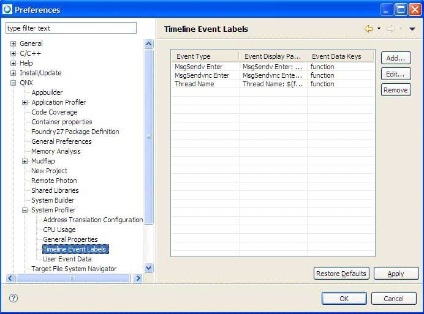

The timeline provides a detailed view of elements in the trace, and its related states and events, as shown below.

The System Profiler's Timeline view.
The Timeline also serves to populate many of the other views and panes within System Profiler. For example, other panes and views generally react to the selected time in System Profiler to populate their data.
The timeline is laid out vertically as a sequence of timeline drawers. Each drawer corresponds to details about the log file, laid out horizontally along a time axis. There are two types of timeline drawers: processes and threads. Threads are grouped under their parent process. For each process or thread, its name is displayed along with a line that follows the time axis. The line is populated with markings for each event that occurred for the thread, and colored areas to indicate which state the thread was in during a given point in time. The following image shows an example of a thread shown on the timeline.

A Timeline drawer.
You zoom the timeline using the toolbar menu actions or key shortcuts. The timeline range, shown at the top of the timeline, displays which portion of the log file is currently displayed, relative to the full log file.
The scrollbar that appears above the shaded area allows you to quickly modify which portion of the trace is being displayed. By dragging the scrollbar left or right, the shaded area is updated, along with the end points in the header of the Processes and Threads section. The Processes and Threads section updates once you release the scrollbar.
In addition, the Timeline is annotated with details such as Event Labels (described below) and lines indicating IPC activity between different threads.

An example of IPC activity between three threads on the Timeline.
You can configure the timeline information that's shown in the search result view to show only the interesting trace event fields. The content of this table can be cut and pasted to the system clipboard as CSV-formatted data.
Event labels
Timeline event labels let distinguish between different types of events (the label only shows the data for the event and its type). In addition, you can also set the Timeline view to display address translation information, such as function name. By using event labels, you can quickly differentiate between different types of events, or display multiple data values for the same event. The purpose of event labels is to annotate function entry and exit events in the Timeline pane with their corresponding function names.
To access the label options, select the Toggle Labels icon in the System Profiler perspective:

The Timeline event label data selection dialog is available by clicking the Toggle labels icon, and then selecting Configuring Event Labels:

Setting event labels in the System Profiler's Timeline view.
The data selection list lets you select multiple data keys. In addition, the dialog lets you define whether you want to customize the display pattern for the corresponding label. By default, a default display pattern is provided and consists of the event type label, followed by a comma separated list of data keys. The display pattern supports the following replacement patterns:
- Data keys are specified by using $data_key_name$, and in the Timeline view, they're replaced by the actual value in the event for the given data key.
- To allow labels to span multiple lines, use the \n option.
For a list of event data keys specific to address translation, see Address translation.
The Timeline event preference page and the property page show the new properties of the labels (select and then expand and select Timeline Event labels):

Setting preferences for the System Profiler's Timeline view.
Once you specify any event labels, the Timeline view shows the display pattern for the label and displays multiple keys.

The System Profiler's Timeline view that includes labels.
In the Preferences dialog, click Edit to edit any existing labels, or click Add to select an event type for which a label had already been defined. Any changes you make change the previously defined label, for which you'll receive a notification message.
In the System Profiler editor's Timeline view, you can navigate to the next or previous event for a specific event owner only. This lets you follow a sequence of events generated by a particular set of event owners (for example finding the next event owned by a thread, or the messages generated by a client and server).
In locations where single events have been identified (for example, the Trace Log view, Search Results view), you can navigate directly to the event location in the System Profiler Timeline editor pane by double-clicking. The selection marker is moved to the event location and, if possible, the specific event owner is scrolled into view in the Timeline editor pane.
The Navigate menu contains a Go To Event command that lets you jump directly to a specific event. This command allows developers to collaborate more easily with one another by providing direct event navigation by event index, event cycle, or natural time.

The System Profiler's Go To Event command.